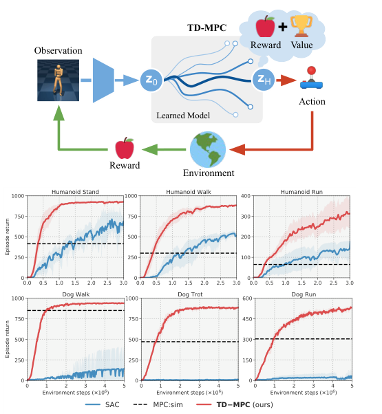
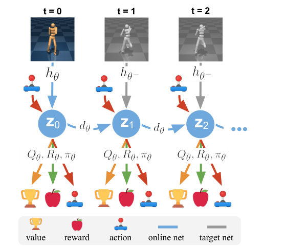
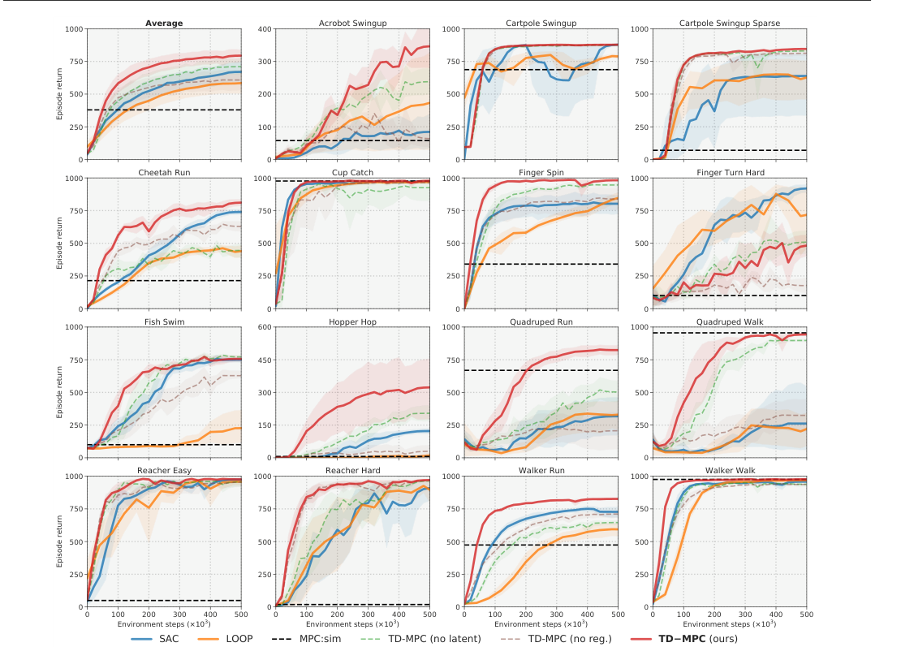
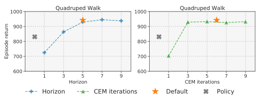

Background & Motivation
TD-MPC 把 model-based 規劃(MPC)和 model-free TD-learning 接在一起:用一個只建模「與報酬有關的部分」的 latent 動力模型(TOLD)做短視野軌跡優化,再用同一套 TD-learning 聯合學出的終端價值函數估計視野之外的長期回報。在 DMControl 與 Meta-World 共 92 個連續控制任務上,樣本效率與最終表現都優於此前的 model-based 與 model-free 方法,並且是第一個有記錄解掉 DMControl Dog(38 維動作)的方法。
TD-MPC couples model-based planning (MPC) with model-free TD-learning: a Task-Oriented Latent Dynamics (TOLD) model that only models what is predictive of reward drives short-horizon trajectory optimization, while a terminal value function learned jointly by the same TD objective estimates return beyond the horizon. Across 92 continuous-control tasks from DMControl and Meta-World it beats prior model-based and model-free methods on sample efficiency and asymptotic performance, and is the first documented method to solve DMControl Dog (38-D actions).

如果只有 30 秒In 30 seconds
- 問題 — model-based RL 有兩個賣點(模型帶來樣本效率、算力愈多規劃愈好),但長視野規劃太貴、模型又難學準(誤差會沿 rollout 累積),所以歷史上常輸給簡單的 model-free 方法。
- Problem — model-based RL promises sample efficiency and compute-scalable planning, but long-horizon planning is costly and accurate models are hard to learn (errors compound along rollouts), so it has historically lost to simpler model-free methods.
- 方法 — 短視野 MPC + 終端價值函數:模型只負責前 \(H=5\) 步,之後交給 \(Q_\theta\)。模型不做像素/狀態重建,只從 reward、value 與 latent 一致性三個訊號學,五個元件全是確定性 MLP,端到端 BPTT 聯合訓練。
- Method — short-horizon MPC + a terminal value function: the model covers only \(H=5\) steps, then hands off to \(Q_\theta\). No pixel/state reconstruction — the model learns purely from reward, value, and a latent-consistency signal; all five components are deterministic MLPs trained jointly with BPTT.
- 結果 — 92 個任務(state、pixel、多模態、稀疏獎勵、multi-task):state-based DMControl 全面領先 SAC/LOOP;Humanoid/Dog 約 1–3M 步就解掉(以前的工作要 30M);牆鐘時間追平 SAC、比同類 LOOP 快 16 倍解掉 Walker Walk。
- Results — 92 tasks (state, pixels, multi-modal, sparse reward, multi-task): clear lead over SAC/LOOP on state-based DMControl; Humanoid/Dog solved within ~1–3M steps (prior work used 30M); wall-clock matches SAC and solves Walker Walk 16x faster than the closest hybrid, LOOP.
領域脈絡Field context
Model-based RL 走兩條路:(a) 拿模型來規劃(PlaNet、PETS、POLO),(b) 拿模型生假資料餵給 model-free 學習器(Dreamer、MBPO)。兩條路的模型多半靠狀態/影像重建來學——這逼網路連陰影、背景這種與任務無關的東西都要建模,學得又慢又容易偏。另一頭,model-free 的 TD 方法(DDPG、SAC)簡單穩定,長年霸榜連續控制。
Model-based RL splits into (a) planning with the model (PlaNet, PETS, POLO) and (b) generating imagined data for a model-free learner (Dreamer, MBPO). Both usually learn the model by state/image reconstruction — forcing the network to model task-irrelevant nuisances like shading — slow to learn and prone to bias. Meanwhile model-free TD methods (DDPG, SAC) are simple, stable, and have long ruled continuous control.
MuZero / EfficientZero 已示範「模型只需對 reward/value 等價」的哲學威力,但它們靠 MCTS 選動作,動作空間必須離散化,高維連續控制根本不可行。TD-MPC 可以視為:把 MuZero 的任務導向模型哲學,搬到連續控制的取樣式 MPC(MPPI)上,並第一次讓模型與價值函數在連續控制中由 TD-learning 聯合學出。
MuZero / EfficientZero demonstrated the power of models that only need to be reward/value-equivalent, but their MCTS action selection requires discretized actions — infeasible in high-dimensional continuous control. TD-MPC can be read as porting the MuZero philosophy to sampling-based MPC (MPPI) for continuous control, and as the first to jointly learn the model and value function by TD-learning there.
[導讀補充] 這篇的核心賭注是「模型的任務是幫規劃打分,不是重建世界」。一旦接受這點,模型可以小到 150 萬參數的純 MLP,還天生對輸入模態(state/pixel/多模態)無感。它也是後來 TD-MPC2(2024,多任務 5B 級 world model agent)的直接前身,值得當成這條路線的起點來讀。
[guide note] The core bet: the job of the model is to score plans, not to reconstruct the world. Accept that, and the model can be a ~1.5M-parameter pure MLP, inherently agnostic to input modality (state/pixels/multi-modal). It is also the direct ancestor of TD-MPC2 (2024, the multi-task world-model agent line) — worth reading as the origin of that lineage.
核心洞見 · KEY INSIGHTSKEY INSIGHTS
值得帶走的不是「又贏了 SAC」,而是這幾個設計觀念:
The takeaways are design principles, not just another win over SAC:
- 模型只建模「會影響報酬的東西」。不做狀態/影像預測,latent 表徵純粹由 reward、TD-value、latent 一致性三個損失塑形——建模無關細節是浪費,還會放大誤差。
- Model only what affects reward. No state/image prediction; the latent representation is shaped purely by reward, TD-value, and latent-consistency losses — modeling irrelevant detail is wasteful and amplifies error.
- 短的交給規劃,長的交給價值。MPC 只展開 \(H=5\) 步(精細的關節動作),\(\gamma^H Q_\theta\) 接手視野外的長期方向(往哪邊跑)——兩邊的弱點恰好互補。
- Planning for the short term, value for the long term. MPC unrolls only \(H=5\) steps (fine-grained joint motion) and \(\gamma^H Q_\theta\) covers everything beyond (which way to run) — their weaknesses are complementary.
- 模型、價值、策略一起學,梯度穿過 rollout。reward/value 的梯度沿多步 latent rollout 反傳(BPTT),直接抑制 compounding error;和「先學模型、再學策略」的解耦式 pipeline 相反。
- Learn model, value, and policy jointly, with gradients through the rollout. Reward/value gradients back-propagate through multi-step latent rollouts (BPTT), directly suppressing compounding error — the opposite of decoupled "learn model first, then policy" pipelines.
- Latent 一致性取代重建。\(d_\theta(z_i,a_i)\) 去逼近 target encoder 的 \(h_{\theta^-}(s_{i+1})\)——不用 decoder、比重建與對比損失都更穩定,而且讓方法天生模態無關(state/pixel/多模態同一套超參數)。
- Latent consistency instead of reconstruction. \(d_\theta(z_i,a_i)\) regresses the target-encoder embedding \(h_{\theta^-}(s_{i+1})\) — no decoder, more consistent than reconstruction or contrastive losses, and inherently modality-agnostic (same hyperparameters for state/pixels/multi-modal).
- 推論時算力是可調的旋鈕。規劃預算(視野、迭代數)愈多表現愈好,不夠時可砍半、甚至退化成只用學到的 \(\pi_\theta\)(快 6 倍但較弱)——這是 model-free 方法根本沒有的自由度。
- Inference compute becomes a tunable knob. More planning budget (horizon, iterations) gives better performance; it can be halved, or collapsed to the learned \(\pi_\theta\) alone (6x faster, weaker) — a degree of freedom model-free methods simply lack.
- 簡單到令人意外。五個元件全是確定性 MLP(Walker 版總共約 150 萬參數),沒有 RNN、沒有機率模型、沒有 ensemble——卻贏過帶著這些裝備的前人。
- Surprisingly simple. All five components are deterministic MLPs (~1.5M parameters total for Walker) — no RNNs, no probabilistic models, no ensembles — yet it beats predecessors carrying all that machinery.
Problem Diagnosis
現況 vs 痛點Status quo vs pain points
| 現有做法Existing approach | 它的痛點Its pain point |
|---|---|
| Model-free TD (DDPG / SAC) | 簡單、漸近表現好,但樣本飢渴,而且推論時沒有「多給算力就變強」的旋鈕;在 Dog(38 維動作)這種難題上幾乎學不動。Simple with strong asymptotics, but sample-hungry and with no knob to trade compute for performance at inference; barely learns hard tasks like Dog (38-D actions). |
| 重建式模型Reconstruction models (PlaNet / Dreamer / LOOP) | 用狀態/影像預測學模型 → 被迫建模陰影、背景等任務無關細節;模型偏差沿 rollout 複利式累積,還會滲進策略。Models learned by state/image prediction are forced to model task-irrelevant nuisances (shading, background); model bias compounds along rollouts and leaks into the policy. |
| MuZero / EfficientZero | 模型只學 reward/value(好哲學),但 MCTS 需要離散動作——連 \(\mathcal{A}\in\mathbb{R}^{6}\) 的 Cheetah 都因維度爆炸做不了。Reward/value-only models (the right philosophy), but MCTS needs discrete actions — even Cheetah with \(\mathcal{A}\in\mathbb{R}^{6}\) is infeasible due to dimensionality explosion. |
| MPC 配真模擬器MPC with ground-truth sim (MPC:sim / POLO) | 要有模擬器才行、每步規劃昂貴;短視野沒有價值函數 → 短視,稀疏獎勵任務直接失敗。Needs a simulator and per-step planning is costly; short horizons without a value function are myopic — fails outright on sparse-reward tasks. |
核心問題:能不能把 model-based 的兩個優點(樣本效率、算力換表現)拿到手,同時保留 model-free 的簡單與速度?
The core question: can we capture both model-based advantages (sample efficiency, compute-for-performance) while keeping model-free simplicity and speed?
Gap 表 — 誰缺什麼,TD-MPC 怎麼補Gap table — who lacks what, and how TD-MPC fills it
| 方法Method | 限制Limitation | TD-MPC 如何補上How TD-MPC fills it |
|---|---|---|
| SAC / DDPG | 無模型、無規劃。No model, no planning. | 保留 TD 價值學習,加上 latent 模型 + MPPI 規劃當「執行器」。Keeps TD value learning, adds a latent model + MPPI planning as the actor. |
| LOOP SAC + 規劃SAC + planning |
模型仍是狀態預測、與價值學習解耦;要 ensemble。Model is still state prediction, decoupled from value learning; needs an ensemble. | reward-centric latent 模型與價值聯合訓練,單一確定性 MLP 即可,快 3.3 倍/500k 步。Reward-centric latent model trained jointly with the value; one deterministic MLP suffices — 3.3x less compute per 500k steps. |
| PlaNet / Dreamer | 重建損失綁死在影像上;RNN/機率模型笨重。Reconstruction ties them to pixels; heavy RNN/probabilistic machinery. | latent 一致性損失——無 decoder、模態無關,state/pixel/多模態同一套設定。Latent-consistency loss — decoder-free, modality-agnostic; same recipe for state/pixels/multi-modal. |
| MuZero / EfficientZero | MCTS → 只能離散動作。MCTS → discrete actions only. | 改用 MPPI(取樣式連續優化)+ 策略引導取樣,原生支援連續動作,直上 \(\mathcal{A}\in\mathbb{R}^{38}\)。Uses MPPI (sampling-based continuous optimization) + policy-guided samples — native continuous actions, scaling to \(\mathcal{A}\in\mathbb{R}^{38}\). |
[導讀補充] 注意作者的定位:每一個零件(終端價值的 MPC、reward-centric 模型、CEM 規劃、策略引導)個別都有前人,貢獻在「第一次把它們組成一個全由 TD-learning 聯合訓練的完整框架」並大規模驗證。讀的時候別找單一神來之筆,要看的是組合為什麼剛好互補。
[guide note] Note the positioning: every ingredient (MPC with terminal value, reward-centric models, CEM planning, policy guidance) has precedents; the contribution is composing them into one framework trained jointly by TD-learning, validated at scale. Read for why the combination is complementary, not for a single magic trick.
Core Method
TOLD:五個元件,一個 latent 空間TOLD: five components, one latent space
TOLD(Task-Oriented Latent Dynamics)由五個確定性 MLP 組成,全部活在 latent 空間 \(z\)(state 版維度僅 50–100):
TOLD (Task-Oriented Latent Dynamics) consists of five deterministic MLPs, all living in a latent space \(z\) (dimension just 50–100 for states):
編碼器 \(h_\theta\) 把觀測壓進 latent;動力 \(d_\theta\) 在 latent 裡往前走;\(R_\theta,Q_\theta\) 給每個 \((z,a)\) 打分;策略 \(\pi_\theta\) 是輔助角色——替 TD-target 提供 \(\arg\max\) 的便宜近似,並在規劃時貢獻引導樣本。
Encoder \(h_\theta\) compresses observations into the latent; dynamics \(d_\theta\) steps forward in latent space; \(R_\theta,Q_\theta\) score each \((z,a)\); the policy \(\pi_\theta\) plays a supporting role — a cheap surrogate for the \(\arg\max\) in TD targets, and a source of guided samples during planning.
訓練:一條軌跡、三個損失、梯度穿過時間Training: one trajectory, three losses, gradients through time

從 replay buffer 取一段長 \(H\) 的軌跡 \(\Gamma\),最小化時間加權目標(近期權重高,\(\lambda=0.5\)):
Sample a length-\(H\) trajectory \(\Gamma\) from the replay buffer and minimize a temporally weighted objective (near-term weighted higher, \(\lambda=0.5\)):
三個關鍵設計:(1) latent 全由 reward/value 塑形——沒有任何觀測重建;(2) rollout 中只有第一個觀測走 \(h_\theta\),其餘 \(z\) 由 \(d_\theta\) 遞迴產生,梯度 BPTT 回傳,逼模型在多步之後仍準;(3) 一致性項用 target encoder \(h_{\theta^-}\) 當回歸目標,提供密集訊號又不必建模無關細節(獎勵稀疏時尤其重要)。策略則另外用停梯度目標 \(\mathcal{J}_\pi=-\sum_i\lambda^{i-t}Q_\theta(z_i,\pi_\theta(\mathrm{sg}(z_i)))\) 最大化 \(Q\)(DDPG 式,確定性 + 線性退火的高斯噪聲)。
Three key choices: (1) the latent is shaped entirely by reward/value — zero observation reconstruction; (2) only the first observation passes through \(h_\theta\); later latents come from recurrent \(d_\theta\) rollouts with gradients back-propagated through time, forcing multi-step accuracy; (3) the consistency term regresses the target encoder \(h_{\theta^-}\), a dense signal without modeling nuisances (crucial when rewards are sparse). The policy separately maximizes \(Q\) via the stop-gradient objective \(\mathcal{J}_\pi=-\sum_i\lambda^{i-t}Q_\theta(z_i,\pi_\theta(\mathrm{sg}(z_i)))\) (DDPG-style: deterministic + linearly annealed Gaussian noise).
推論:MPPI 規劃迴圈Inference: the MPPI planning loop
每條軌跡的分數 = 短期用模型、長期用價值:
Each trajectory is scored by model for the short term, value for the long term:
探索靠兩個小技巧:\(\sigma\) 設下限 \(\epsilon\)(0.5 線性退火到 0.05,避免過早收斂),訓練初期規劃視野從 1 線性升到 5(初期模型不準,規劃會被 model bias 帶偏)。
Exploration rests on two tricks: a floor \(\epsilon\) on \(\sigma\) (annealed 0.5 to 0.05, preventing premature convergence), and a horizon schedule from 1 up to 5 early in training (an inaccurate early model would let model bias dominate planning).
符號白話對照Symbols in plain words
| \(h_\theta\) | 編碼器:觀測 → latent \(z\)(state 用 1 層 MLP;pixel 用 4 層 CNN)。Encoder: observation → latent \(z\) (1-layer MLP for states; 4-layer CNN for pixels). |
| \(d_\theta(z,a)\) | latent 動力模型:預測下一個 latent 狀態,規劃時的「想像引擎」。Latent dynamics: predicts the next latent state — the imagination engine for planning. |
| \(R_\theta,\;Q_\theta\) | 單步報酬預測器與狀態-動作價值(雙 Q 網路取小,抗高估)。One-step reward predictor and state-action value (double Q, min-taken, fighting overestimation). |
| \(\pi_\theta\) | 輔助策略:近似 \(\arg\max_a Q\),供 TD-target 與引導取樣;比規劃弱但快 6 倍。Auxiliary policy: approximates \(\arg\max_a Q\) for TD targets and guided sampling; weaker than planning but 6x faster. |
| \(\theta^-\) | target 網路(EMA,\(\zeta=0.99\)):供 value target 與 latent 一致性 target。Target network (EMA, \(\zeta=0.99\)): provides both the value target and the latent-consistency target. |
| \(H,\;\lambda\) | 規劃/訓練視野 \(H=5\);時間衰減權重 \(\lambda=0.5\)(近步比遠步重要)。Planning/training horizon \(H=5\); temporal weight \(\lambda=0.5\) (near steps matter more). |
| \(\phi_\Gamma,\;\Omega_i\) | 軌跡分數與其 softmax 型權重 \(\Omega_i=e^{\tau\phi^\star_i}\)(\(\tau\) 控制銳利度)。Trajectory score and its softmax-style weight \(\Omega_i=e^{\tau\phi^\star_i}\) (\(\tau\) controls sharpness). |
實作規模感:Walker 版 TOLD 總參數約 150 萬;\(\gamma=0.99\)、\(c_{1:3}=(0.5,0.1,2)\)、PER 取樣、多數任務單 GPU 一小時內可解。
Scale check: the Walker TOLD totals ~1.5M parameters; \(\gamma=0.99\), \(c_{1:3}=(0.5,0.1,2)\), PER sampling; most tasks solve within an hour on one GPU.
Experimental Evidence
主結果:15 個 state-based DMControl 任務(500k 步)Main result: 15 state-based DMControl tasks (500k steps)

用 rliable 聚合(5 seeds):TD-MPC 的 median / IQM / mean 全高於 SAC 與 LOOP。Humanoid(\(\mathcal{A}\in\mathbb{R}^{21}\))與 Dog(\(\mathcal{A}\in\mathbb{R}^{38}\))六個任務約 1–3M 步解掉,是第一個有記錄解 Dog 的方法;此前工作在 Humanoid 上通常要 30M 步。
Aggregated with rliable (5 seeds): TD-MPC exceeds SAC and LOOP on median / IQM / mean. The six Humanoid (\(\mathcal{A}\in\mathbb{R}^{21}\)) and Dog (\(\mathcal{A}\in\mathbb{R}^{38}\)) tasks are solved within ~1–3M steps — the first documented solve of Dog; prior work typically needed 30M steps on Humanoid.
影像輸入:DMControl 100k(Tab.1,10 seeds)From pixels: DMControl 100k (Tab.1, 10 seeds)
| 任務Task | TD-MPC | DrQ | EfficientZero* |
|---|---|---|---|
| Finger Spin | 943±59 | 901±104 | — |
| Cup Catch | 933±24 | 913±53 | 942±17 |
| Cartpole Swingup | 770±70 | 759±92 | 813±19 |
| Reacher Easy | 628±105 | 601±213 | 952±34 |
| Walker Walk | 577±208 | 612±164 | — |
| Cheetah Run | 222±88 | 344±67 | — |
*EfficientZero 動作離散化、評測前多跑 20k 梯度步,且因維度爆炸做不了 Walker/Cheetah(\(\mathcal{A}\in\mathbb{R}^{6}\))。誠實解讀:TD-MPC 沒特別為影像調參下大致與 SOTA 打平(贏 Finger Spin,輸 Cheetah),賣點是「同一套配方通吃」而非全面領先。3M 步的 Dreamer benchmark 上,它穩定勝過 CURL/DrQ,與 DrQ-v2/Dreamer-v2 相當——且全任務共用同一組超參數。
*EfficientZero discretizes actions, runs 20k extra gradient steps before eval, and cannot handle Walker/Cheetah (\(\mathcal{A}\in\mathbb{R}^{6}\)) due to dimensionality explosion. Honest read: with no pixel-specific tuning, TD-MPC is roughly on par with SOTA (wins Finger Spin, loses Cheetah) — the selling point is one recipe for everything, not universal dominance. On the 3M-step Dreamer benchmark it consistently beats CURL/DrQ and matches DrQ-v2/Dreamer-v2 — with a single hyperparameter set across all tasks.
其他證據一覽Other evidence at a glance
| 實驗Experiment | 發現Finding |
|---|---|
| Meta-World 50 個 goal-conditioned 操作任務50 goal-conditioned manipulation tasks | 整體成功率高於 SAC;複雜操作(Bin Picking、Box Close、Hammer、Basketball)樣本效率大幅領先;MT10 多任務同時學 10 個任務也更好。Higher overall success than SAC; far more sample-efficient on complex manipulation (Bin Picking, Box Close, Hammer, Basketball); also better on MT10 multi-task (10 tasks at once). |
| 多模態輸入Multi-modal input | 本體感覺 + 第一人稱相機的 Quadruped Corridor/Obstacles:TD-MPC 成功融合兩模態,盲眼版(只有本體感覺)失敗——證明表徵真的用上了視覺。Proprioception + egocentric camera on Quadruped Corridor/Obstacles: TD-MPC fuses both modalities; the blind variant (proprioception only) fails — the representation genuinely uses vision. |
| 遷移(Walk→Run)Transfer (Walk→Run) | 微調整個 TOLD 收斂快很多;凍結 \(h_\theta\) 幾乎不掉,凍結 \(h_\theta{+}d_\theta\) 明顯變慢 → 編碼器學到可遷移特徵,動力模型偏任務特定。Fine-tuning the full TOLD converges much faster; freezing \(h_\theta\) barely hurts, freezing \(h_\theta{+}d_\theta\) degrades clearly → the encoder transfers, the dynamics are task-specific. |
| 牆鐘時間(RTX3090)Wall-clock (RTX3090) | Walker Walk 解題時間:TD-MPC 0.47h ≈ SAC 0.41h,比 LOOP(7.72h)快 16 倍;每 500k 步耗時 5.60h(SAC 1.41h、LOOP 18.5h)——比 model-free 貴,但把 model-based 的時間成本壓到同一量級。Time-to-solve Walker Walk: TD-MPC 0.47h ≈ SAC 0.41h, 16x faster than LOOP (7.72h); 5.60h per 500k steps (SAC 1.41h, LOOP 18.5h) — pricier than model-free, but pulls model-based cost into the same ballpark. |
消融怎麼讀Reading the ablations
| 拿掉什麼What is removed | 變成誰What it becomes | 結果證明What it proves |
|---|---|---|
| latent(\(h_\theta\)= identity)the latent (\(h_\theta\)= identity) | 近似「狀態預測式」model-based RL≈ state-prediction model-based RL | 明顯變差 → 在 latent 空間建模是關鍵,不只是壓維度。Clearly worse → modeling in latent space is essential, not just dimensionality reduction. |
| 一致性正則(\(c_3{=}0\))consistency regularizer (\(c_3{=}0\)) | 近似 MuZero 式「純 reward/value 模型」≈ MuZero-style pure reward/value model | 不穩、多數任務掉分 → 只靠 reward/value 訊號太稀,表徵需要密集錨點。Unstable, drops on most tasks → reward/value alone is too sparse; the representation needs a dense anchor. |
| 一致性 → 重建 / 對比損失consistency → reconstruction / contrastive | PlaNet/Dreamer 式、EfficientZero 式PlaNet/Dreamer-style, EfficientZero-style | 兩者都比無正則好,但一致性損失最穩定(Fig.10,15 任務平均)。Both beat no-regularization, but the consistency loss is the most consistent (Fig.10, 15-task average). |

一句話:實驗證明了「省樣本 + 可用算力換表現」,但沒證明「每個單項任務都是 SOTA」——影像任務上它是「打平但更通用」,難探索任務上它會輸。
In one line: the experiments prove sample efficiency + compute-for-performance, not per-task SOTA everywhere — on pixels it ties while being more general, and on hard-exploration tasks it loses.
Critical Reading
可被質疑的點Contestable points
- 任務導向是雙面刃:表徵完全由當前任務的 reward 塑形,遷移實驗只做了高度相關的 Walk→Run(同域);作者自己承認「無關任務之間,通用模型應該收益更大」。報酬結構一換,TOLD 的 latent 可能整組作廢。
- Task orientation cuts both ways: the representation is shaped entirely by the current reward; transfer is only tested on the highly related Walk→Run (same domain) — the authors themselves concede general models should benefit more across unrelated tasks. Change the reward structure and the TOLD latent may be worthless.
- 探索是弱項而非亮點:探索全靠 \(\sigma\) 下限的線性退火這種啟發式;Finger Turn Hard 上輸給 SAC 和 LOOP(作者有揭露)。規劃「集中火力」的特性,在需要廣度探索時反而礙事。
- Exploration is a weakness, not a feature: it rests on the heuristic annealed floor on \(\sigma\); it loses to SAC and LOOP on Finger Turn Hard (disclosed by the authors). The focusing nature of planning works against breadth when exploration is the bottleneck.
- Baseline 公平性可再追問:LOOP 此前從未在 DMControl/Meta-World 上跑過,超參數是作者代調(batch、\(\zeta\)、seed steps);SAC 的 batch 從 1024 降到 512「以求公平」。影像結果多數直接引用他人論文數字,評測協定未必對齊(EfficientZero 額外 20k 梯度步、動作離散化,作者有標註)。
- Baseline fairness invites scrutiny: LOOP had never been benchmarked on DMControl/Meta-World — its hyperparameters were adapted by the authors (batch, \(\zeta\), seed steps); SAC batch was lowered 1024→512 "for fairness." Most pixel numbers are imported from other papers with possibly misaligned protocols (EfficientZero: 20k extra gradient steps, discretized actions — flagged by the authors).
- 影像任務其實沒贏:100k benchmark 上 DrQ 在 Walker Walk(612 vs 577)、Cheetah Run(344 vs 222)領先;abstract 的說法是「match state-of-the-art」——「打平」是靠聚合閱讀撐起來的主張,逐任務看有輸有贏。
- It does not actually win on pixels: on the 100k benchmark DrQ leads on Walker Walk (612 vs 577) and Cheetah Run (344 vs 222); the abstract says "match state-of-the-art" — a claim carried by aggregate reading; per task it wins some, loses some.
- 每步推論成本高於 model-free:預設規劃 512×6 次迭代的 latent rollout,~20ms/步(50Hz);每 500k 步 5.60h 是 SAC 的 4 倍。50Hz 對操作夠用,對高頻控制(力控、靈巧手)或無 GPU 的嵌入式平台仍是門檻。
- Per-step inference costs more than model-free: default planning runs 512×6 iterations of latent rollouts, ~20ms/step (50Hz); 5.60h per 500k steps is 4x SAC. Fine for manipulation, but a barrier for high-rate control (force control, dexterous hands) or GPU-less embedded platforms.
- 確定性一切:動力、策略全確定性、無 ensemble;沒有任何機制表達「模型不知道」。規劃器會恰好利用模型最樂觀的錯誤(optimizer exploitation),論文靠短視野 + 價值截斷緩解,但未正面分析。
- Deterministic everything: dynamics and policy are deterministic, no ensembles; there is no mechanism to express model ignorance. Planners exploit precisely the most optimistic model errors; the short horizon + value cutoff mitigates this, but it is never analyzed head-on.
給讀書會 / 審稿的犀利問題Sharp questions for a reading group / review
- 獎勵全零時表徵學什麼?探索到第一個 reward 之前,塑形 latent 的只剩一致性損失——它會不會塌縮(target encoder 也在動)?稀疏任務的成功是否其實靠 PER 與 \(\epsilon\) 排程救回來?
- What does the representation learn before any reward is seen? Until the first reward, only the consistency loss shapes the latent — can it collapse (the target encoder moves too)? Do sparse-reward successes actually ride on PER and the \(\epsilon\) schedule?
- \(Q\) 的分布偏移:資料由規劃器 \(\Pi_\theta\) 收集,TD-target 卻用 \(\pi_\theta\) 的動作 bootstrapping。兩者在難任務上差距明顯(Fig.6 的 ✕ vs 星),這個 off-policy 缺口為什麼沒炸?何時會炸?
- Distribution shift in \(Q\): data is collected by the planner \(\Pi_\theta\), but TD targets bootstrap with \(\pi_\theta\) actions. The two differ markedly on hard tasks (✕ vs star in Fig.6). Why does this off-policy gap not blow up — and when would it?
- 把環境變隨機呢?在動力有噪聲或部分可觀測時,確定性 latent rollout 的估分會偏;需要多大的隨機性才會讓 TD-MPC 掉回 SAC 之下?
- What if the environment is stochastic? With noisy dynamics or partial observability, deterministic latent rollouts score with bias. How much stochasticity does it take for TD-MPC to fall below SAC?
- 增益來自規劃還是表徵?若拿 TOLD 的 \(h_\theta\) 特徵直接餵 SAC(不規劃),能吃到多少好處?Fig.6 顯示 policy-only 明顯較弱,暗示規劃是主力——但表徵的貢獻沒被單獨定量。
- Planning or representation — where is the gain? Feed TOLD features \(h_\theta\) to SAC without planning: how much benefit remains? Fig.6 shows policy-only is clearly weaker, hinting planning is the main engine — but the representation contribution is never isolated.
- 調參預算對齊了嗎?TD-MPC 自身有不少敏感旋鈕(\(H\)、迭代數、\(\epsilon\)/視野排程、\(c_{1:3}\)、PER)。若給 SAC/LOOP 同等的 per-benchmark 調參預算,Fig.3 的差距會縮多少?
- Was tuning budget aligned? TD-MPC has its own sensitive knobs (\(H\), iterations, \(\epsilon\)/horizon schedules, \(c_{1:3}\), PER). Given SAC/LOOP the same per-benchmark tuning budget, how much of the Fig.3 gap survives?
Takeaways
對你研究的啟發Implications for your research
- 「模型為用而學」的原則可以到處搬:表徵/模型不必忠於世界,只需忠於下游用途(這裡是規劃打分)。做機器人操作或 world model 相關題目時,先問「這個模型的消費者是誰」,再決定損失函數。
- The learn-the-model-for-its-use principle travels: a representation/model owes fidelity to its downstream consumer (here, plan scoring), not to the world. For manipulation or world-model projects, first ask who consumes the model, then choose the losses.
- 「短規劃 + 學到的終端價值」是個可重用的控制骨架:任何有低階模型(解析或學到)的系統,都能用 TD 學一個價值當視野延伸,而不是硬拉長規劃視野。與 library 中 FB representation(Touati 2021)恰成對照:FB 學「所有任務」的價值結構(任務無關),TOLD 學「單一任務」的最小充分模型(任務導向)——兩個極端之間是很好的研究地帶。[導讀補充]
- Short planning + learned terminal value is a reusable control skeleton: any system with a low-level model (analytic or learned) can TD-learn a value to extend the horizon instead of lengthening the plan. A neat contrast with FB representations (Touati 2021, in this library): FB learns value structure for all tasks (task-free); TOLD learns a minimal sufficient model for one task (task-oriented) — the space between the two extremes is fertile ground. [guide note]
- latent 一致性損失是便宜又通用的模型正則:要在自己的 pipeline 裡學動力模型(例如 force-aware 操作的接觸動力),可先試「預測 target encoder 嵌入」再考慮重建/對比。
- The latent-consistency loss is a cheap, general model regularizer: when learning dynamics in your own pipeline (say, contact dynamics for force-aware manipulation), try predict-the-target-embedding before reaching for reconstruction/contrastive.
- 推論算力可調是規劃式方法被低估的優點:同一個 agent,離線評估用大預算、實機部署砍半、極端即時退回 policy-only。設計系統時可以把這個旋鈕顯式暴露出來。
- Tunable inference compute is an underrated perk of planning methods: one agent, big budget for offline eval, half for deployment, policy-only for hard real-time. Worth exposing this knob explicitly in your own systems.
值得引用的點What is worth citing
| 當你要主張…When you claim… | 就引這篇Cite this for |
|---|---|
| 「不必重建觀測也能學出可規劃的模型」"Plannable models need no observation reconstruction" | TOLD:reward + value + latent 一致性三損失塑形的任務導向模型。TOLD: a task-oriented model shaped by reward + value + latent-consistency losses. |
| 「MPC 的視野可以用 TD 價值補完」"A TD value can complete the MPC horizon" | 連續控制中第一個模型與價值由 TD-learning 聯合學出的完整框架。The first complete framework jointly TD-learning model and value in continuous control. |
| 「model-based 能同時省樣本又不犧牲牆鐘時間」"Model-based can be sample-efficient without wall-clock pain" | Table 2:時間追平 SAC、16 倍快於 LOOP;Dog 首解、Humanoid 1/10 樣本。Table 2: matches SAC time, 16x faster than LOOP; first Dog solve, Humanoid at 1/10 the samples. |
| 「推論算力 ↔ 表現可以連續交換」"Inference compute trades continuously for performance" | Fig.6/8:視野與迭代數的單調增益曲線 + policy-only 退化模式。Fig.6/8: monotone gain curves over horizon/iterations + the policy-only fallback. |
TD-MPC 把 MuZero 的「模型只需對價值等價」哲學帶進連續控制:五個小 MLP、一個 TD 目標,短視野規劃管精細動作、終端價值管長期方向——在 92 個任務上證明 model-based 終於可以又準、又省樣本、又不拖時間。它不是世界模型的勝利,而是「為規劃量身訂做的最小模型」的勝利。
TD-MPC brings the MuZero value-equivalence philosophy to continuous control: five small MLPs, one TD objective — short-horizon planning for fine motion, a terminal value for long-term direction — proving across 92 tasks that model-based RL can finally be accurate, sample-efficient, and fast at once. Not a victory for world models, but for the minimal model tailored to planning.